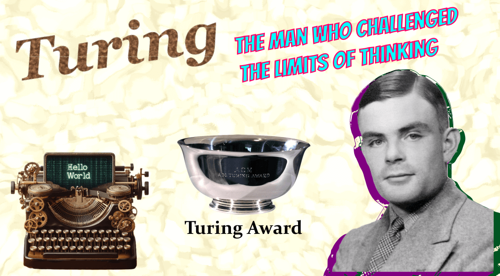

Turing: The Man Who Invented the Computer and Challenged the Limits of Thinking
1st January 2024
Table of Contents
Introduction
Alan Turing, the unsung hero of Computer Science, often goes unnoticed by many, even those immersed in the field. I discovered his profound contributions after a weekend spent watching 'The Imitation Game' (2014). Inspired, I decided to write this blog, hoping to introduce you to the genius behind modern computing, Alan Turing, a remarkable mathematician and the father of Modern Computer Science.
Who is Alan Turing?
Alan Turing was an English Mathematician and Computer Scientist who was born in London. He entered the University of Cambridge to study mathematics in 1931. In 1938, he obtained his PhD from the Department of Mathematics at Princeton University.
He was famous for his invention of Turing's machine Bombe which was used to decode the Enigma encryption of the German Army which helped Britain to get an edge in WW2. Many of us should thank him for the development of the Turing Machine which helped in developing modern computers.
He also wrote Turing's paper called "The Imitation Game" which coined the idea of AI. That's why he is also called the Father of AI. Alan Turing had an IQ of 185, which put him in the top 0.1% of the population. He was also married to Clarke who helped him decode the Enigma encryption.
The Turing Machine
As per Wikipedia, a Turing machine is a mathematical abstraction representing a computational model that manipulates symbols on a tape following a set of rules. Despite its simplicity, this model is capable of executing any computer algorithm.
In 1936, Alan Turing, alongside fellow code-breaker Gordon Welchman, developed the Universal Turing Machine called the Bombe. Initially designed to decipher encrypted Enigma messages, it was the synergy of machine logic and human understanding that led to pivotal breakthroughs. The machine played a crucial role in aiding Britain's victory over Nazi Germany in World War II.
For those in Computer Science majors, the Theory of Computation often includes studying the Turing Machine. It serves as a foundational concept in understanding computation. And because of this machine, Alan Turing is called the father of Modern Computer Science.
If you want to understand the Turing Machine further, check out this video:
Turing's Test
The Turing Test, conceptualized by the pioneering mind of Alan Turing, is a benchmark in the field of artificial intelligence. Proposed in 1950, this test assesses a machine's ability to exhibit intelligent behavior indistinguishable from that of a human. In essence, if a human evaluator interacting with both a machine and a human cannot reliably distinguish between the two based on their responses, the machine is said to have passed the Turing Test.
Turing's motivation behind this test was to explore the question, "Can machines think?" It delves into the realm of machine intelligence and challenges our understanding of what it means to truly comprehend, reason, and communicate—a question as relevant today as it was when Turing first posed it. The Turing Test has become a touchstone for advancements in artificial intelligence and remains a thought-provoking benchmark in the ongoing dialogue about the capabilities and limitations of machines in imitating human intelligence.
With the recent rise of generative AI, which produces text, images, and video on command, computers have passed the Turing test. Programs like ChatGPT, Bard, Claude AI, etc. can convincingly come off as humans in a dialogue.
I found a great video explaining Turing's Test, take a look :
The Film "The Imitation Game" (2014)
I watched this movie last weekend as of writing this blog, and it's a pretty interesting movie. I would give it a solid 4⭐ out of 5 and it's a good watch. I had Benedict Cumberbatch (as Alan Turing) which adds depth to the character in the movie. The movie is very well shot with the theme of how old Britain would have been during World War 2. It also showed the Turing Machine made by Alan and his team. But the machine was named Christoper (a friend of Alan in school shown in the film) but in real life, it was named Bombe. This was done to connect the audience more with the character. It also talked about the tragic end of Alan Turing's life and you can feel the pain of him.
I also want to talk about a scene from the film in which Alan and a detective are having a conversation about the Turing Test, and the detective asks "Can machines think?" and Alan answers "Of course machines can't as people do, the machine is different from a person because they think differently?" and when I watched that scene my first thought was ChatGPT. In 2014, the writers wouldn't have thought that ChatGPT would be released and would be connected with it.
But the movie had a lot of drama, to engage the audience. And while taking creative license into account, the film was just 42.3% accurate when compared to real-life events.
To know more about these factual inaccuracies, look at this article from The Washington Post : here
Turing Award
According to Wikipedia, The ACM A. M. Turing Award is an annual prize given by the Association for Computing Machinery for contributions of lasting and major technical importance to computer science.
The latest Turing Award was given in 2022 to Robert Metcalfe for inventing Ethernet. As I am from India, the Indian who won this award was Dabbala Rajagopal, often known as Raj Reddy, an Indian American computer scientist for pioneering the design and construction of large-scale artificial intelligence systems.
Tragic End of Alan Turing's life
Life is rarely a seamless journey, and the story of Alan Turing reflects this truth. As a homosexual in the 1940s when homosexuality was illegal, he faced legal repercussions. Despite privately confiding in his wife about his sexuality, she reportedly remained unfazed. Turing, realizing the challenges ahead, ended his engagement with Clarke in mid-1941. Unfortunately, his life took a tragic turn, culminating in his untimely death by suicide from cyanide poisoning on June 7, 1954.
Conclusion
In conclusion, the life of Alan Turing, the brilliant mind behind the modern computer, is a tapestry of innovation, adversity, and courage. From his groundbreaking work during World War II to the conceptualization of the Turing Machine and the enduring legacy of the Turing Test, Turing's contributions have shaped the landscape of computer science. As we reflect on his story, let us appreciate not only the genius that propelled us into the digital age but also the complexities of a life marked by triumphs and challenges. Alan Turing's legacy remains a testament to the limitless potential of human intellect, inspiring generations to come.
Despite his profound contributions, the narrative takes a somber turn towards an unfortunate end. For those intrigued by his story, "The Imitation Game" film provides a captivating portrayal—worth a watch to delve deeper into the legacy of this extraordinary mind.
Thank you for reading till the end! üôå I hope you found this blog enjoyable and interesting. You can also read my other blogs on my profile.